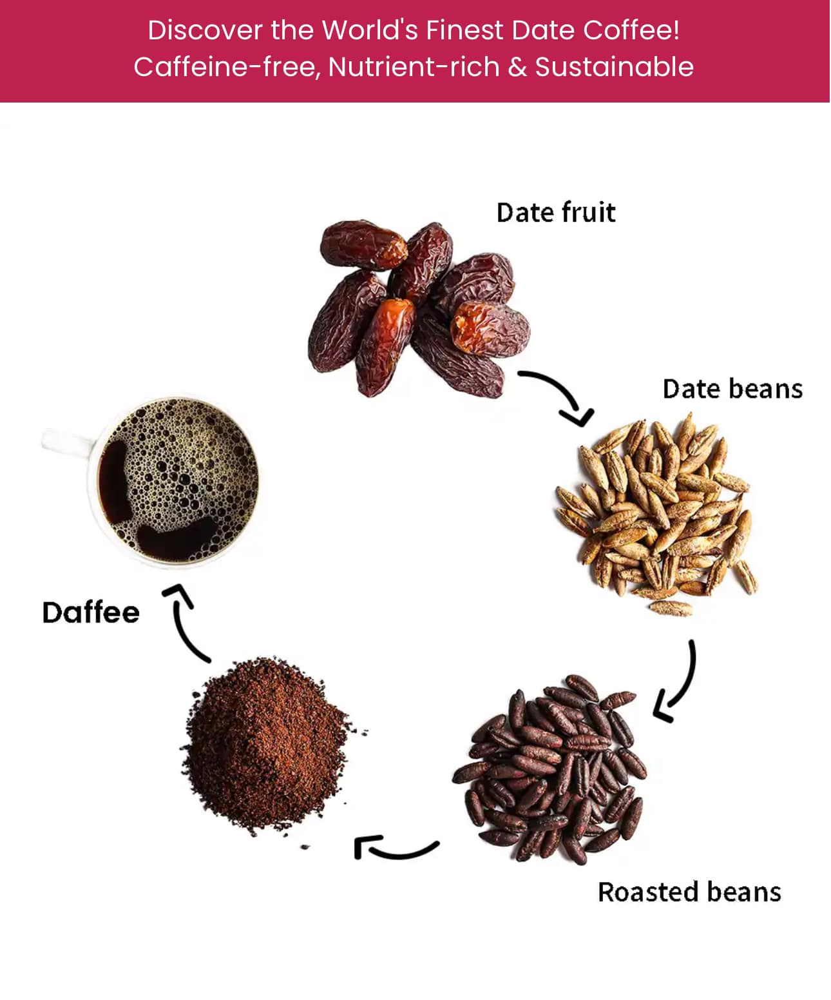

গ্রামের ছোট্ট ঘরে বসে আছি, জানালা দিয়ে ঢুকছে নিমের হালকা গন্ধ। নানি ফাতেমা খেজুরের বাঁদি ঠেলে বললেন, "শোনো মুনিয়া, আজ তোকে এমন জিনিস শেখাবো যা তোর আম্মাও জানে না!" চোখ ট্যারা দিয়ে হাসলাম। নানির হাতের জাদু আমি জানি—তুলসী-মধুর সিরাপ থেকে শুরু করে ডালিমের খোসার চা, সবই তাঁর কাছে শিখেছি।
"এই দেখ, খেজুর খেয়ে বীজ ফেলে দিস নাকি?" নানি তাঁর থলের ভেতর থেকে এক মুঠো খেজুরের বীজ বের করলেন। মাখামাখি বালির মতো রঙ, শক্ত খোসা। "এগুলো ধুয়ে রোদে শুকাতে হবে তিন দিন। মনে রাখবে, বীজের ভেতরের সাদা অংশটাই আসল গুপ্তধন!"
প্রথম ধাপ : বীজের প্রক্রিয়া
নানির কথামতো বীজগুলো লবণ-পানি ভিজিয়ে ঘষে ঘষে পরিষ্কার করলাম। তারপর টিনের ট্রেতে সাজিয়ে রাখলাম মাটির চালায়। রোদে শুকাতে দিলাম তিন দিন। নানি বললেন, "সূর্য এদের প্রাণ ফিরিয়ে দেবে, ঠিক যেমন মরুভূমিতে খেজুর গাছ জন্মায়!"
দ্বিতীয় ধাপ : আগুনের আঁচ
চতুর্থ দিন সকালে নানি কাঠের চুলায় আঁচ বসালেন। লোহার কড়াইয়ে শুকনো বীজ ছড়িয়ে দিলেন। "এইবার এদের ভাজবে ধীরে ধীরে, যেন কড়াইয়ের গান শুনতে শুনতে রং হয় সোনালি!" বীজগুলো ফুটফুট করে নাচতে লাগল, গন্ধটা ঠিক যেন হালকা কারামেল মেশানো বাদাম।
তৃতীয় ধাপ: মাটির পাত্রের রহস্য
ভাজা বীজ ঠাণ্ডা হলে নানি এনে দিলেন পাথরের হামানদিস্তা। "গুঁড়ো করবে যত্ন করে, নইলে কফি হবে তেতো!" ঘুরিয়ে ঘুরিয়ে পিষলাম, গুঁড়োটা দেখতে কফির মতোই গাঢ়। নানি মিশালেন এক চিমটে দারচিনি গুঁড়ো। বললেন, "এটা আমাদের পরিবারের সিক্রেট—মরুভূমির মসলা!"
চতুর্থ ধাপ : ক্যাফেইন হীন কফি
এক কাপ ঠাণ্ডা পানি আর গুঁড়ো মিশিয়ে স্টোভে চড়ালাম। ফুটতে ফুটতে রং হয়ে এল ঘন বাদামি। নানি ছেঁকে নিলেন মাটির কলসিতে। ঢাললেন এক ফোঁটা খেজুরের সিরাপ। প্রথম চুমুকেই মনে হলো, যেন মরুভূমির বালি আর খেজুর বাগানের ছায়া জড়িয়ে গেল গলায়!
"কেমন লাগল?" নানির চোখে চিকন হাসি।
"নানি, এটা তো কফি না... ম্যাজিক!"
"হুঁ! এই কফিতে ক্যাফেইন নেই, কিন্তু এনার্জি আছে খেজুরের প্রাণ!" বলেই তিনি কানে কানে ফিসফিস করলেন, "এই রেসিপি নিয়ে গল্প আছে—বলেন, প্রাচীন বেদুইনরা যুদ্ধের সময় এই কফি পান করে শক্তি পেত!"
সেদিন বিকেলে বৃষ্টি নামল। নানির খেজুর-কফির গল্প আর ঘ্রাণে ভিজে থাকলো মন। আর হ্যাঁ, রেসিপিটা লিখে রেখেছি পুরোনো ডায়েরিতে, নানির হাতের লেখার পাশে... ❤️
সহজ রেসিপি স্টেপস (গল্পের পাতায় লুকানো):*
১. খেজুর বীজ ধুয়ে ৩ দিন রোদে শুকান।
২. শুকনো বীজ লো-হিটে গোল্ডেন ব্রাউন হয়ে না পর্যন্ত ভাজুন।
৩. পিষে গুঁড়ো করুন, দারচিনি গুড়ো মিশান।
৪. পানি সহ ফুটিয়ে ছেঁকে নিন। মিষ্টি দিতে খেজুর সিরাপ!
☕ **টিপ**: এই কফি গরম-ঠাণ্ডা দুভাবেই খাওয়া যায়। উপরে নারকেল ক্রিম দিলে স্বর্গ!
